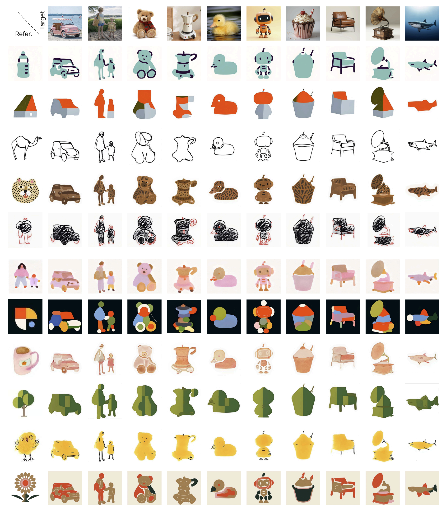
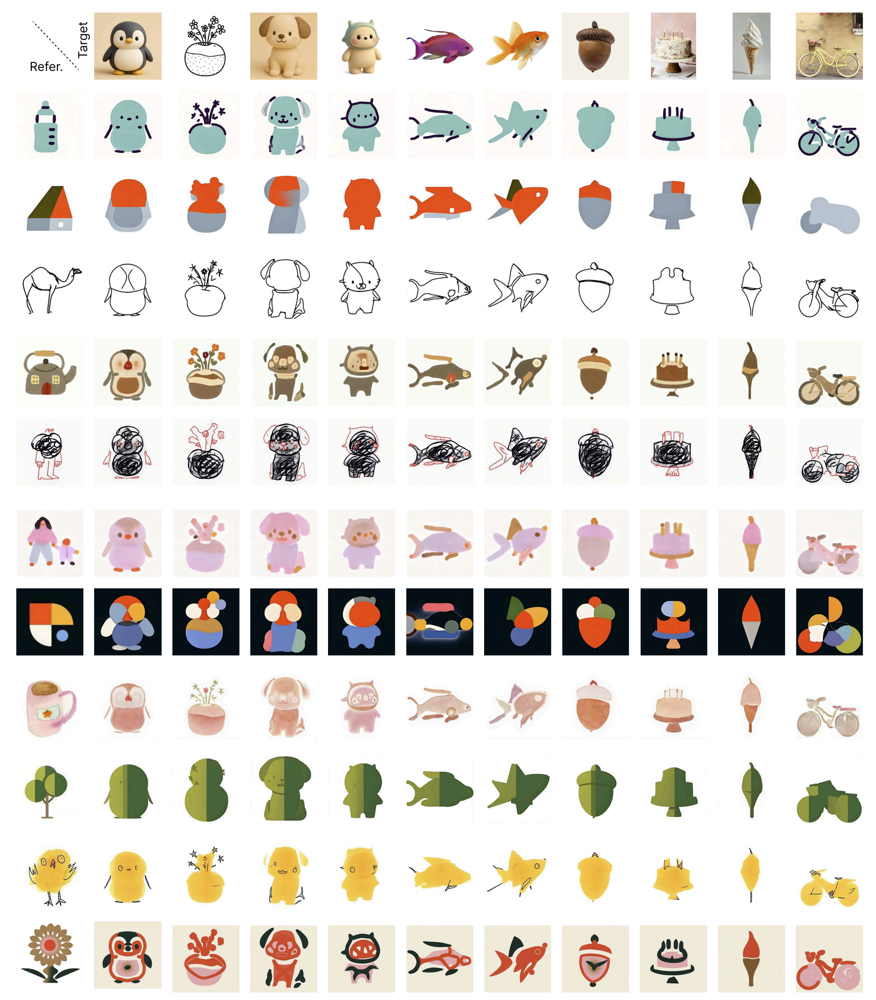
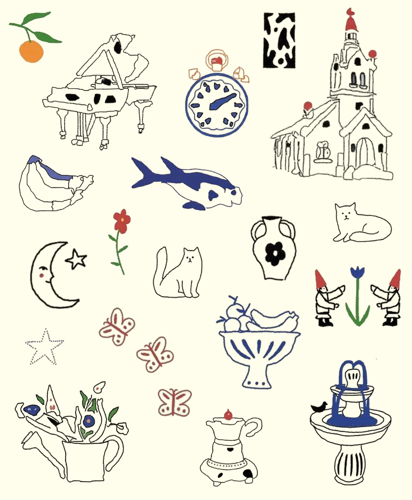
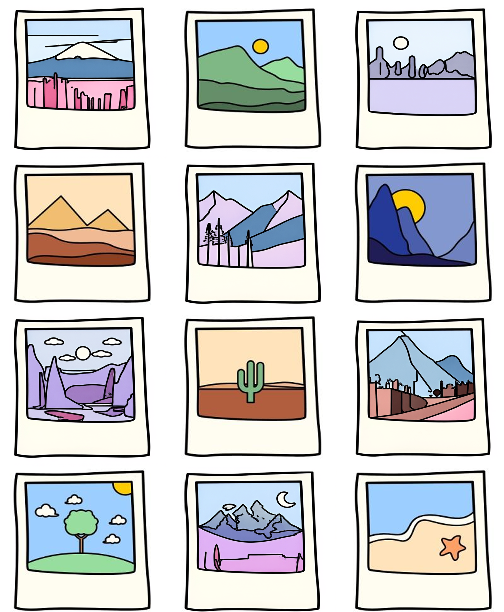
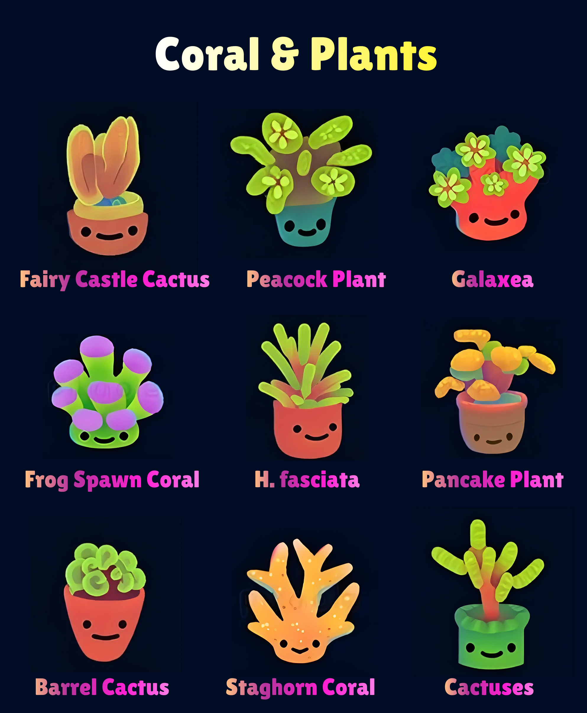
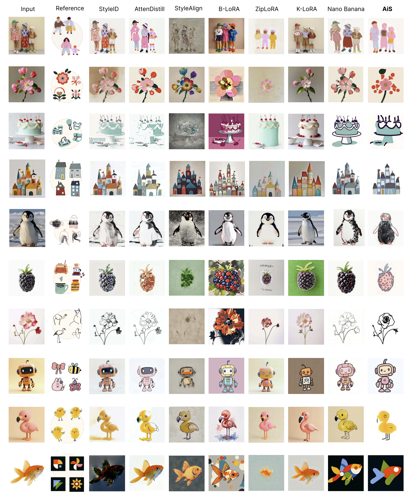
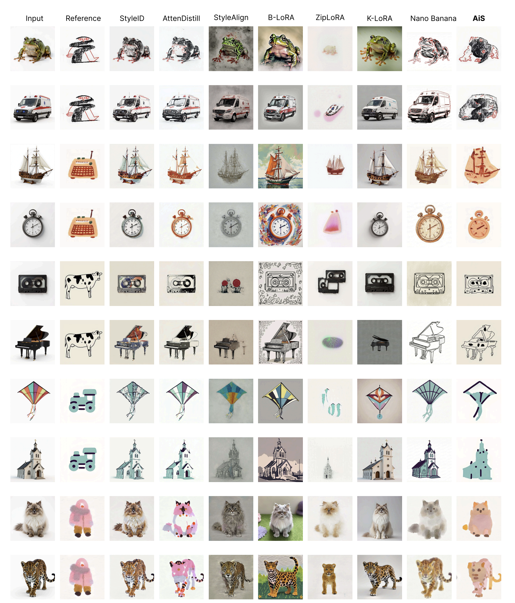
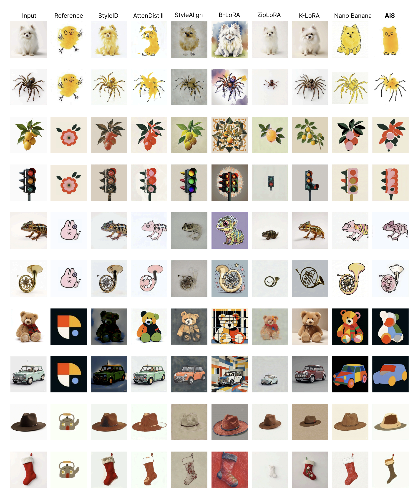

Artistic styles often embed abstraction beyond surface appearance, involving deliberate reinterpretation of structure rather than mere changes in texture or color. Conventional style transfer methods typically preserve the input geometry and therefore struggle to capture this deeper abstraction behavior, especially for illustrative and non-photorealistic styles. In this work, we introduce Abstraction in Style (AiS), a generative framework that separates structural abstraction from visual stylization. Given a target image and a small set of style exemplars, AiS first derives an intermediate abstraction proxy that reinterprets the target’s structure in accordance with the abstraction logic exhibited by the style. The proxy captures semantic structure while relaxing geometric fidelity, enabling subsequent stylization to operate on an abstracted representation rather than the original image. In a second stage, the abstraction proxy is rendered to produce the final stylized output, preserving visual coherence with the reference style. Both stages are implemented using a shared image-space analogy, enabling transformations to be learned from visual exemplars without explicit geometric supervision. By decoupling abstraction from appearance and treating abstraction as an explicit, transferable process, AiS supports a wider range of stylistic transformations, improves controllability, and enables more expressive stylization.
How does it work?
Abstraction in Style (AiS) formulates stylized image generation as a two-stage process: first, the target image is transformed into an abstraction proxy by A-VAT, which reinterprets its structure according to the abstraction logic of the reference exemplars; then, the proxy is rendered into the final stylized output by S-VAT, which matches the visual appearance of the reference style.
The two stages are implemented within a shared Visual Analogy Transfer (VAT) framework, where A-VAT learns image-space transformations from 2×2 analogy layouts of the form A → A′ :: B → B′ for structural abstraction, while S-VAT learns the corresponding Proxy → Output mapping for visual stylization. In practice, VAT is realized with a diffusion transformer and a lightweight LoRA adapter, enabling the model to infer the missing panel B′ from the visible reference pair and the input B, thereby supporting both structural abstraction and visual stylization within a unified framework.
Generated examples


Each column corresponds to a different target image. Each row corresponds to a different reference style (with one exemplar shown per style), which is applied to all targets in that row.
For each target image, its style-agnostic hidden backbone is first generated. For each reference style, the system uses a trained A-VAT to generate an abstraction proxy (left grayscale image in each pair), which is then stylized via the corresponding S-VAT to create the final result (right image in the pair).
Independent Control of Structure and Style
Mix of Three Different A-VATs with Four S-VATs: giving the same S-VAT, the generated outputs share visual appearance (color, texture) but exhibit distinct geometry, demonstrating independent control of style and structure.
Seamless Integration with Reference Exemplars

Click the stylized object you think was generated by AiS.

Click the stylized object you think was generated by AiS.

Click the stylized object you think was generated by AiS.
This is a guessing game: identify which stylized objects in the image are results generated by our method, AiS. If you guess correctly, the game briefly reveals the corresponding real image for that stylized object; otherwise, it shows the wrong emoji.
Comparison with State-of-the-Art Methods



Existing methods struggle with abstract styles and over-rigidly preserve input structure, producing unsatisfactory results. Our method excels at capturing nuanced artistic styles while maintaining natural structural variations.
Citation
@misc{lu2026abstractionstyle,title={Abstraction in Style},author={Min Lu and Yuanfeng He and Anthony Chen and Jianhuang He and Pu Wang and Daniel Cohen-Or and Hui Huang},year={2026},eprint={2603.29924},archivePrefix={arXiv},primaryClass={cs.CV},url={https://arxiv.org/abs/2603.29924},}